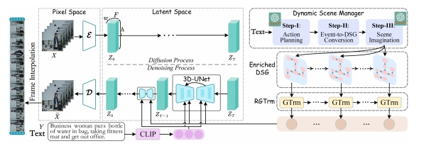
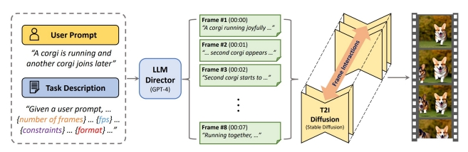

P108
2.5 Storyboard
P109

P110
What is a storyboard?
✅ 难点：保持内容的一致性。
P111
A concept in film production

- Rough sketches/drawings with notes
- Example: Inception by Christopher Nola
Storyboard image from deviantart.com.
P112
How to generate such a storyboard?
-
As humans, over the years, we have acquired such “visual prior” about object location, object shape, relation, etc.
-
Can LLM model such visual prio？
P113
| ID | Year | Name | Note | Tags | Link |
|---|---|---|---|---|---|
| 61 | 2023 | Xie et al., “VisorGPT: Learning Visual Prior via Generative Pre-Training,” | A “diffusion over diffusion” architecture for very long video generation | link | |
| 2023 | Lin et al., “VideoDirectorGPT: Consistent Multi-scene Video Generation via LLM-Guided Planning,” | Use storyboard as condition to generate video ✅ Control Net，把文本转为 Pixel 图片。 |   | ||
| 2024 | Xie et al., “Learning Long-form Video Prior via Generative Pre-Training,” | GPT can be trained to learn better long-form video prior (e.g., object position, relative size, human interaction) ✅ 用 GPT-4 In-context learning 机制生成结构化文本 ✅ GPT 缺少一些视觉上的 commen sense 主要是缺少相关数据集。 ✅ 因此这里提供了一个数据集Storyboard20K。 |  | dataset | |
| 41 | 2024 | STORYDIFFUSION: CONSISTENT SELF-ATTENTION FOR LONG-RANGE IMAGE AND VIDEO GENERATION | 先生成一致的关键帧，再插帧成中间图像 | link |
|  | Dysen-VDM (Fei et al.) Storyboard through scene graphs “Empowering Dynamics-aware Text-to-Video Diffusion with Large Language Models,” arXiv 2023. |
|  | DirectT2V (Hong et al.) Storyboard through bounding boxes “Large Language Models are Frame-level Directors for Zero-shot Text-to-Video Generation,” arXiv 2023. |
 | Free-Bloom (Huang et al.) Storyboard through detailed text prompts “Free-Bloom: Zero-Shot Text-to-Video Generator with LLM Director and LDM Animator,” NeurIPS 2023. |
 | LLM-Grounded Video Diffusion Models (Lian et al.) Storyboard through foreground bounding boxes “LLM-grounded Video Diffusion Models,” arXiv 2023. |
本文出自CaterpillarStudyGroup，转载请注明出处。
https://caterpillarstudygroup.github.io/ImportantArticles/